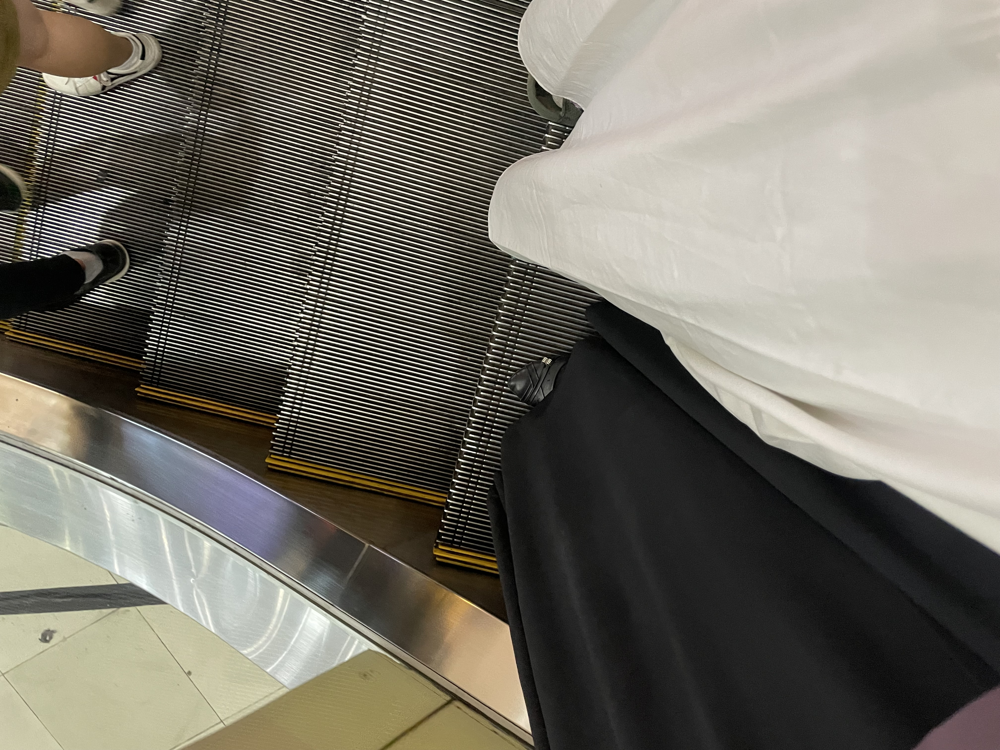
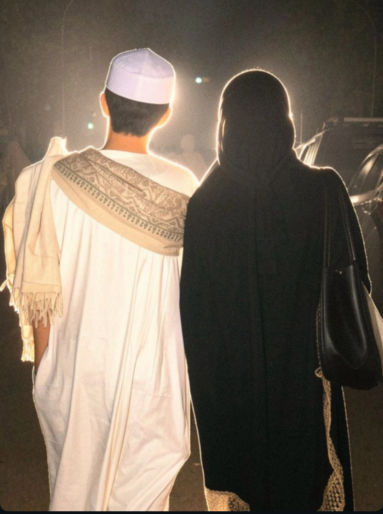
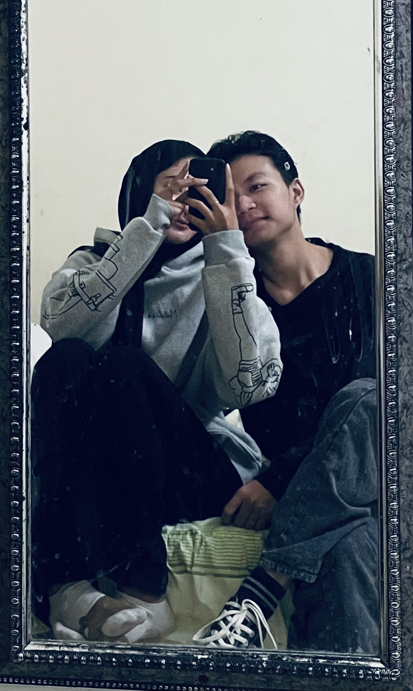

Our Memories 📸





Until I Found You — Stephen Sanchez



Sayang...
Aku nggak pernah tahu kalau Allah bisa menghadirkan seseorang yang begitu indah dalam hidupku. Seseorang yang perlahan mengubah hari-hariku menjadi lebih hangat, lebih berarti, dan lebih berwarna.
Sebelum mengenalmu, hidup berjalan begitu saja. Aku tertawa, aku menjalani hari-hari, aku mengejar banyak hal. Tapi setelah mengenalmu, aku sadar... ternyata ada perasaan tenang yang selama ini belum pernah aku temukan.
Kamu adalah rumah yang tidak memiliki alamat. Tempat pulang yang bahkan tidak terbuat dari bangunan. Karena setiap kali aku bersamamu, hatiku selalu merasa pulang.
Aku bersyukur. Bukan karena hidupku sempurna. Bukan karena semuanya selalu mudah. Tapi karena di tengah semua itu, Allah mempertemukanku dengan kamu.
Terima kasih sudah hadir. Terima kasih sudah bertahan. Terima kasih sudah menjadi perempuan baik yang selalu berusaha mengerti aku meski aku sering banyak kurangnya.
Kalau suatu hari nanti aku ditanya apa hadiah terindah yang pernah Allah berikan dalam hidupku, aku akan menjawab: "pertemuan denganmu."
Karena sejak kamu hadir, aku mengerti arti doa yang dikabulkan secara perlahan.
Dan jika aku boleh meminta satu hal kepada Allah, aku hanya ingin terus menemukanmu... di setiap doa, di setiap langkah, dan di setiap masa depan yang sedang kita perjuangkan.
Terima kasih karena sudah menjadi alasan aku bersyukur setiap hari.
I love you, Cihaaa Honey 🤍